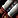
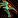
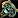
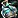
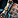

Inscription in MoP Classic is more than just glyphs. You can craft powerful shoulder enchants, off-hand items, and Bind-to-Account staves. Scribes also play a big role in the economy with Darkmoon Cards, which are some of the best pre-raid trinkets in the game.
This guide covers everything you need to know: profession perks, daily cooldowns, glyph discovery methods, and the full list of key Inscription crafts in Mists of Pandaria Classic.
If you're looking to level up Inscription, check out my separate leveling guide here:
MoP Classic Inscription Leveling Guide
Profession Bonuses and Perks
In MoP Classic, Inscription gives you exclusive shoulder enchants with better stats than the normal ones. These are the main profession bonuses for Scribes, offering extra Strength, Agility, Intellect, or Stamina depending on your class. You can also craft epic bind-to-account staffs for your alts, which are great starter weapons for fresh level 90 characters.
Shoulder Enchants
These enchants give you +320 Agility/Strength/Intellect or +480 Stamina over the normal shoulder enchants.
- Secret Tiger Fang Inscription - 520 Strength, 100 Critical Strike
- Secret Tiger Claw Inscription - 520 Agility, 100 Critical Strike
- Secret Crane Wing Inscription - 520 Intellect, 100 Critical Strike
- Secret Ox Horn Inscription - 720 Stamina, 150 Dodge
Bind to Account Staves (ilvl 476)
These staves are Bind to Account, so you can send them to your other characters once you upgrade your main weapon. They can't be sold on the Auction House. Each one requires 20x 

Inscribed Crane Staff - healer- Inscribed Serpent Staff - spell dps

Inscribed Tiger Staff - Agility dps
Daily Cooldown
Scroll of Wisdom is your main daily cooldown in MoP Classic. Every time you create one, you have a chance to discover a new MoP glyph you haven't learned yet.
The scroll itself is Bind on Pickup and used as a reagent in Epic Off-hands, Darkmoon Cards, and the ilvl 476 staves. You should try to craft one every day if you're planning to make gold or collect all glyphs.
Darkmoon Cards
You can craft one random MoP Darkmoon Card per day with the Darkmoon Card of Mists recipe. This craft itself doesn't have a cooldown, but it requires Scroll of Wisdom, which is limited to one per day. So you're effectively gated by the Scroll of Wisdom daily cooldown.
The card you get is random and can belong to any of the four Pandaria decks: Ox, Crane, Serpent, or Tiger. Each deck needs 8 cards (Ace to Eight). Once complete, you can combine them into a deck and turn it in at the Darkmoon Faire to receive a powerful ilvl 476 trinket.
These trinkets are some of the best pre-raid options and are also valuable for gold-making. You can sell the cards and decks on the Auction House, or trade them with other players to complete your sets faster.
| Deck | Trinket | Role |
|---|---|---|
| Crane Deck | Relic of Chi-Ji | Healer |
| Ox Deck | Relic of Niuzao | Tank |
| Serpent Deck | Relic of Yu'lon | Spell DPS |
| Tiger Deck | Relic of Xuen / Relic of Xuen | Melee DPS |
Shoulder Enchants
These shoulder enchants come in two tiers. They are crafted with Inscription but can be used by anyone and sold on the Auction House.
The cheaper ones cost 3x 

Crane Wing Inscription - 120 Intellect, 80 Crit- Ox Horn Inscription - 180 Stamina, 120 Dodge
- Tiger Claw Inscription - 120 Agility, 80 Crit
- Tiger Fang Inscription - 120 Strength, 80 Crit
The stronger versions cost 3x Starlight Ink:
- Greater Crane Wing Inscription - 200 Intellect, 100 Crit
- Greater Ox Horn Inscription - 300 Stamina, 150 Dodge
- Greater Tiger Claw Inscription - 200 Agility, 100 Crit
- Greater Tiger Fang Inscription - 200 Strength, 100 Crit
Epic Off-hands (ilvl 476)
You can craft ilvl 476 BoE off-hand items for casters and healers. Each one costs 5x Scroll of Wisdom and can be learned directly from the trainer.
| Item | Role | Materials |
|---|---|---|
| Inscribed Red Fan | Healer | 1x Inscribed Fan, 3x Starlight Ink, 5x Scroll of Wisdom |
| Inscribed Jade Fan | Caster DPS | 1x Inscribed Fan, 3x Starlight Ink, 5x Scroll of Wisdom |
Glyph Discovery
There are a few different ways to discover new glyphs in MoP Classic. Most discoveries are random, so you can't target specific glyphs. Because of that, I'm not listing every glyph here, just the methods you can use to learn them.
TLDR: If you want to unlock all glyphs, you should craft these every day:
| Item | Materials |
|---|---|
| Scroll of Wisdom | 3x Ink of Dreams |
| Northrend Inscription Research | 3x Ink of the Sea, 1x Snowfall Ink |
| Minor Inscription Research | 1x Moonglow Ink |
1. Scroll of Wisdom
Crafting a Scroll of Wisdom once per day will teach you a random Pandaria glyph. This is your main discovery method in MoP Classic.
After you learn all 36 MoP glyphs, you'll start discovering older glyphs from previous expansions if you haven't unlocked those already.
2. Northrend Inscription Research
Northrend Inscription Research teaches random glyphs originally introduced in WotLK. There are about 80 glyphs total.
In MoP Classic, this method can now also reveal glyphs that were previously only available from Book of Glyph Mastery. But if you want to speed it up, you can still buy the books from the Auction House and use both methods together.
3. Minor Inscription Research
This method teaches 68 minor glyphs. It uses low-level inks and is a good daily to keep running alongside the others until you've learned them all.